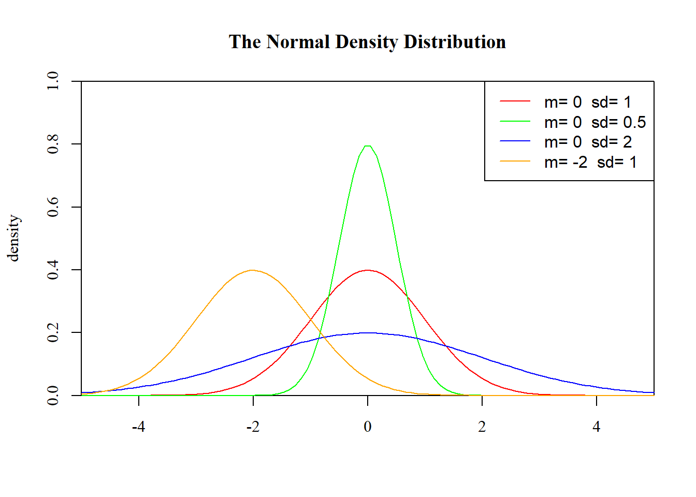
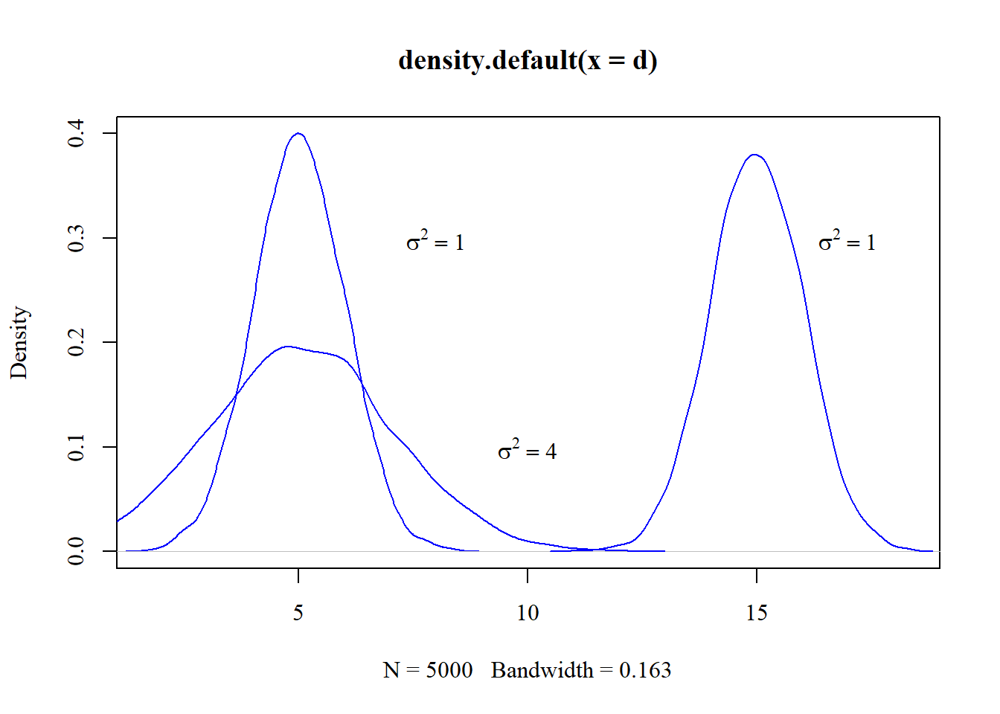
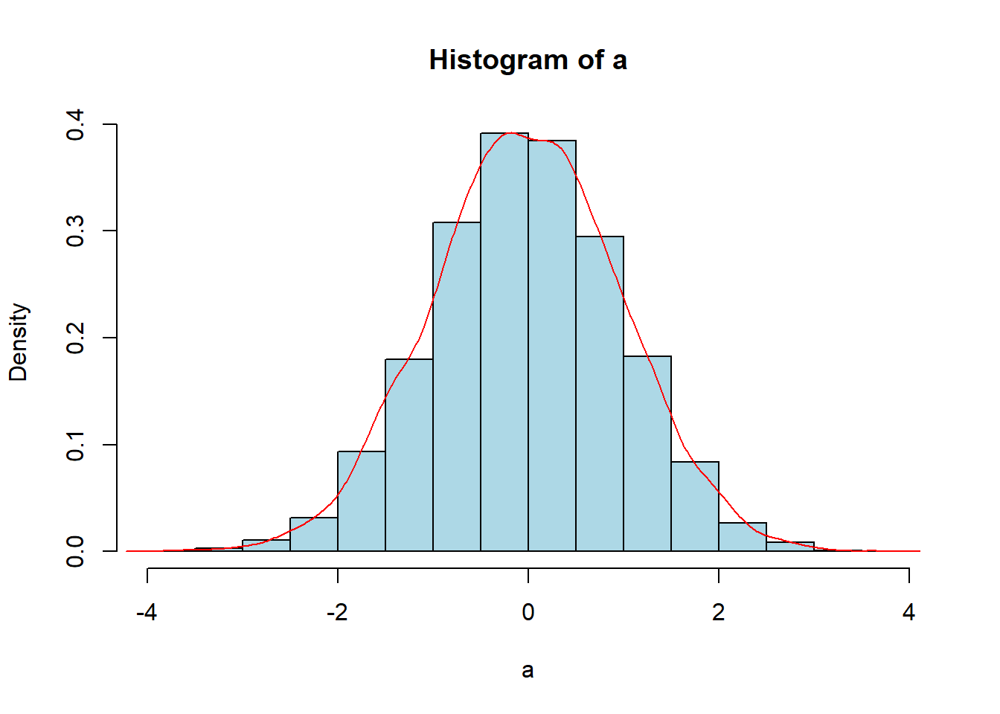
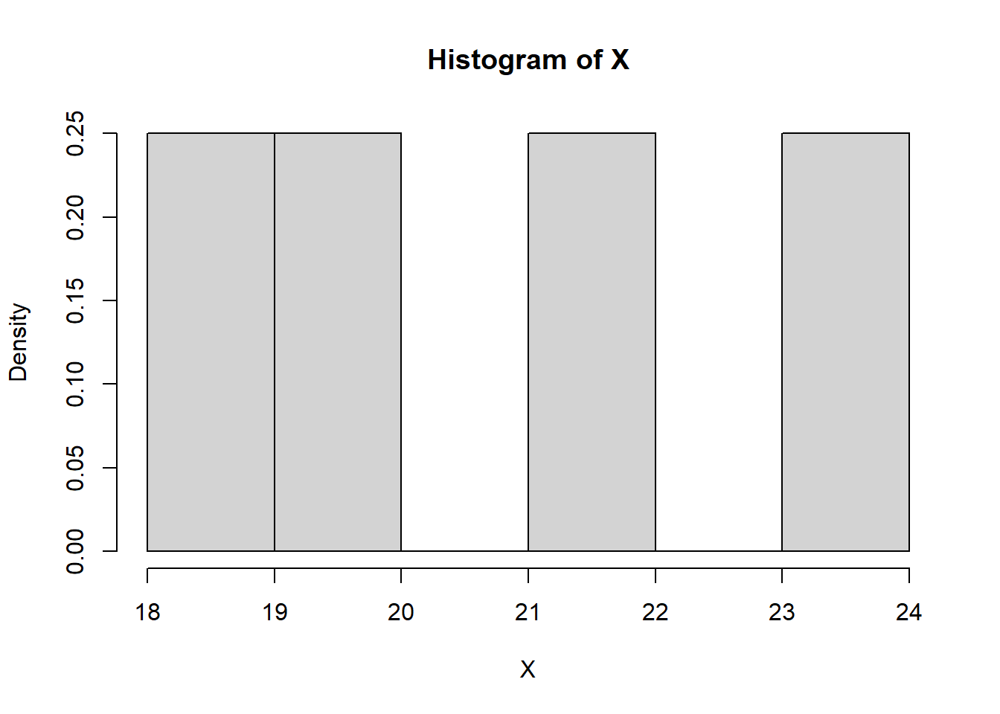
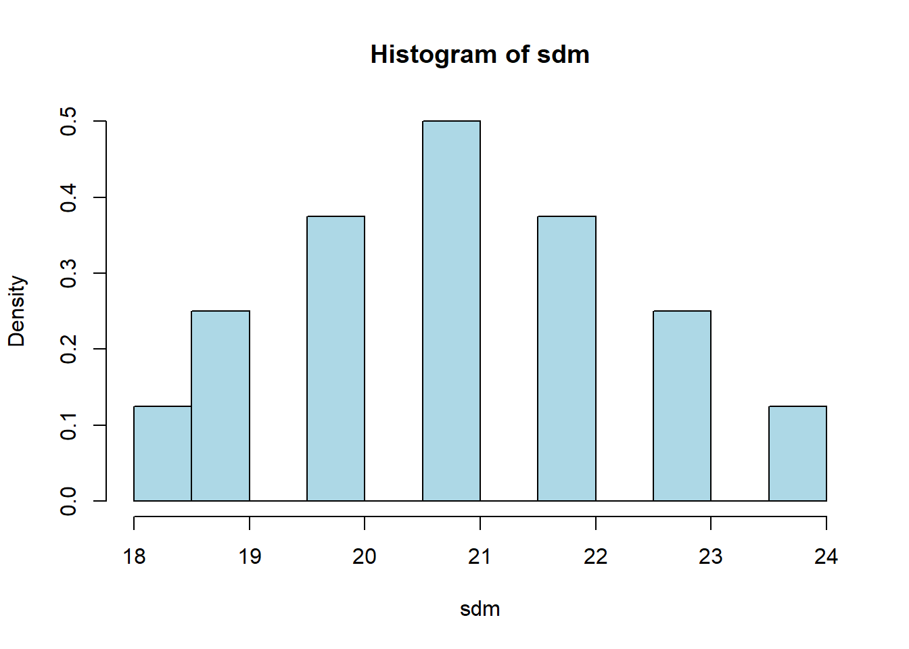
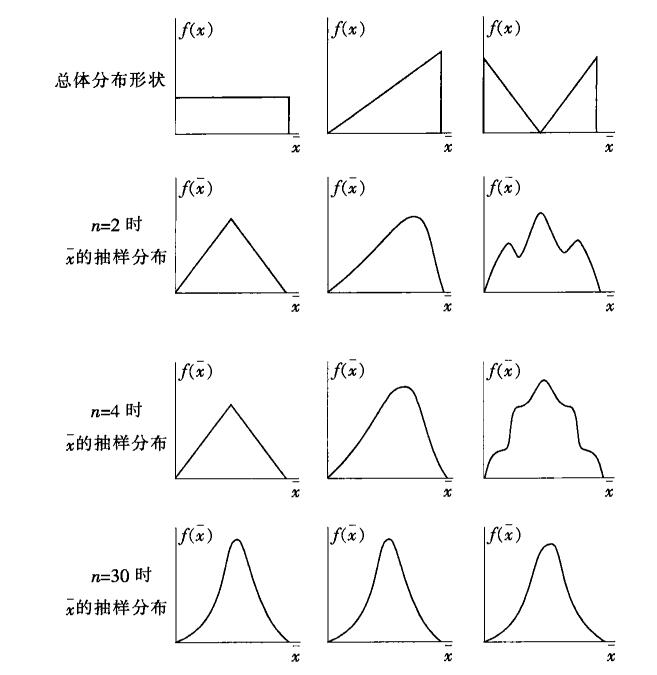
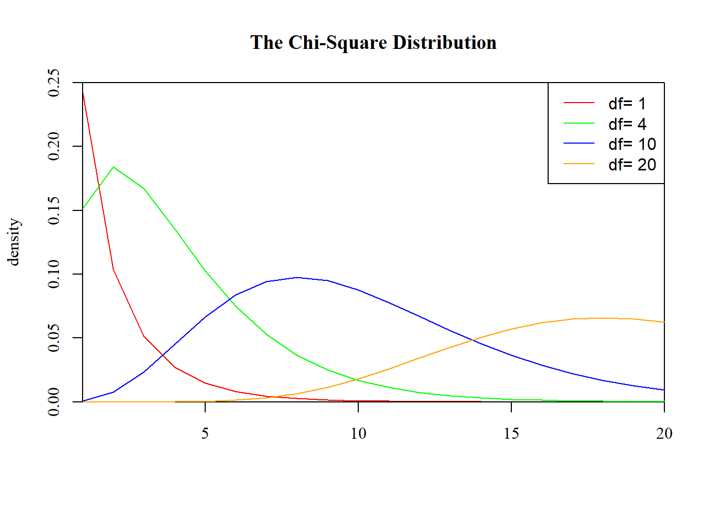
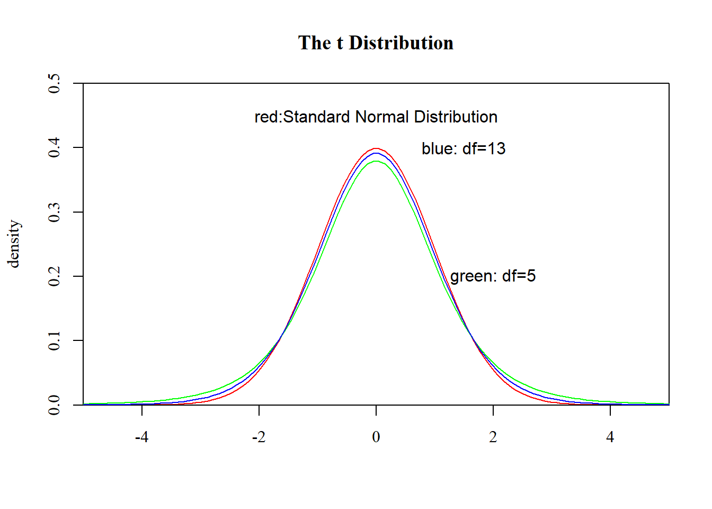
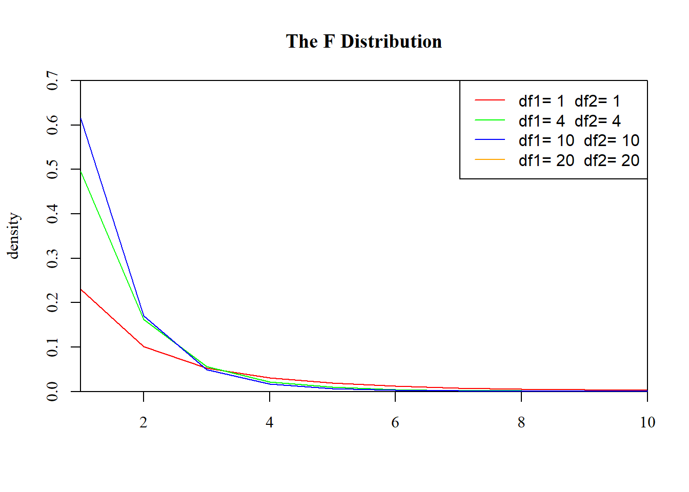

第 4 章 Sampling And Sample Distribution
本篇是第四章，内容主要是抽样方法与抽样分布。这一章内容比较多（从抽样方法一直到许多分布函数，尤其是介绍了四个重要分布——正态分布、卡方分布、t分布、F分布，以及部分统计推断的内容）。
4.1 抽样方法
抽样调查的概念前面已经有所涉及到，这里就不详述了。大部分情况下，普查是不太可能的，所以抽样调查是科学研究中应用最为广泛的收集数据的方法。但是正如前面在谈论precision和accuracy问题的时候说的，我们希望数据的质量是Low Bias and Low Variance，抽样调查的样本既能很好地代表总体（非抽样误差小），同时多次抽样的话，也希望抽样的样本大致都接近，降低抽样误差。所以从统计学诞生至今，已经提出了很多的抽样方法。可以说并没有任何一种方法能完全避免这些误差，这些方法需要根据具体情境具体使用。
总的来说，抽样方法可以分为两大类：概率抽样与非概率抽样。概率抽样是根据一个已知的概率来抽取样本单位（也称为随机抽样），概率抽样要求按照一定的概率随机抽取样本，也就是说每个样本都有一定的机会被抽中，同时每个样本被抽中的概率是可以已知或计算出来的，而当运用概率抽样的样本进行参数估计的时候必须考虑样本被抽中的概率（某种程度来说感觉类似贝叶斯，先验概率和后验概率的问题）。概率抽样包括了：
- 简单随机抽样——从总体N个单位里抽出n个单位作为样本（可以重复抽样，也可以不重复抽样），最常用的抽样方式，参数估计和假设检验主要依据的就是简单随机样本。
- 系统抽样——将总体中的所有单位(抽样单位)按一定顺序排列， 在规定的范围内随机地抽取一个单位作为初始单位， 然后按事先规定好的规则确定其他样本单位（先从数字1到k之间随机抽取一个数字r作为初始单位，以后依次取r+k， r+2k…等单位）。
- 分层抽样——将总体单位按某种特征或某种规则划分为不同的层(Strata)， 然后从不同的层中独立、 随机地抽取样本。
- 整群抽样——将总体中若干个单位合并为组(群)， 抽样时直接抽取群， 然后对中选群中的所有单位全部实施调查。
- 多阶段抽样——先抽取群， 但并不是调查群内的所有单位， 而是再进行一步抽样，从选中的群中抽取出若干个单位进行调查（群是初级抽样单位，第二阶段抽取的是最终抽样单位。将该方法推广， 使抽样的段数增多， 就称为多阶段抽样）
非概率抽样则不是按照随机的原则选取样本，而是根据研究的具体需求选取调查样本。非概率抽样包括了：
- 方便抽样——研究员依据方便的原则选取对应的样本。
- 判断抽样——研究员根据自己的判断选择样本。
- 自愿样本——被调查者自愿参加调查提供信息。举个跟地学相关的例子——志愿地理信息（Volunteer Geographcial Information,VGI），是指利用工具创建、组装和传播个人资源提供的地理数据，像社交媒体中的签到。
- 滚雪球抽样——首先选择一组进行调查，让调查者提供另外一些属于调查总体的调查对象，然后持续下去
- 配额抽样——先将体中的所有单位按一定的标志（变量） 分为若干类， 然后在每个类中采用方便抽样或判断抽样的方式选取样本单位。
总的来说，各种抽样方式各有各有的优缺点，根据研究具体情况进行选择。而实际研究中简单随机抽样的应用更多些，这边提供R语言中做简单随机抽样的代码示例。
4.2 正态分布
正态分布由高斯作为描述误差相对频数分布的模型而提出的：
- 描述连续型随机变量的最重要的分布
- 许多现象都可以由正态分布来描述
- 可用于近似离散型随机变量的分布
- 经典统计推断的基础
正态分布的意义，多多少少大家都有了解，这里就不再详述了。随机变量服从\(X\sim N (\mu,\sigma^2)\)，则X的概率密度函数为
\[f(x)=\frac{1}{\sigma\sqrt{2\pi}}e^{-\frac{1}{2}(\frac{x-\mu}{\sigma})^2} -\infty<x<\infty\]
这就是正态分布的概率密度函数。正态分布具有如下性质：
- 关于x=\(\mu\)的钟形对称性质，峰值在x=\(\mu\)处。
- 均值和标准差一旦决定，该分布形式也就决定了。
- 均值决定分布函数位置，标准差决定函数的扁平程度。
- X轴两侧无限延伸，f(x)无限逼近x轴,但理论上不可能相交。
- 正态随机变量在特定区间上的取值概率由正态曲线下的面积给出，而且其曲线下的总面积等于1
下图给出了两个图（一个是用核密度生成的曲线，一个是正态分布概率密度函数）来说明以上的部分性质（具体实现的R语言代码在附录文件夹中的src里面）。


标准正态分布就是指均值为0，标准差为1的正态分布。通过标准正态分布可以很方便地求算各种概率，所以实际应用中，往往将正态分布数据通过标准化的方式转化为标准正态分布求解具体概率。即令\(Z=\frac{x-\mu}{\sigma}\)，则Z服从标准正态分布。那么如何检验数据的正态性呢？一般有以下几种方法：
- 对数据画出频数分布的直方图或茎叶图（若数据近似服从正态分布， 则图形的形状与上面给出的正态曲线应该相似）。
- 求出样本数据的四分位差和标准差， 然后二者计算比值。 若数据近似服从正态分布，则有 \[Q_d/s\approx1/3\]
- 拟合优度检验
一般可以通过画这个图来进行检验（代码同在附录文件夹src中这一章的代码文件里面）。

或者计算四分位差和标准差比值。这里给出这个方法的R语言实现(用户自编函数）。
Normaltestindex <- function(x) {
q = fivenum(x)
Qd = q[4] - q[2]
s = sd(x)
Normaltestindex = Qd/s
cat("The Qd/s", Normaltestindex)
}拟合优度检验是后面章节内容，这里不详述。正态分布在各样本相互前提下存在线性可加性。\(x_i\sim N(\mu_i,\sigma_i)\)，且\(x_i\)相互独立，则 \(\Sigma a_ix_i\sim N(\Sigma a_i\mu_i,\Sigma a_i^2\sigma_i^2)\)。同时样本量够大情况下，n个独立随机变量之和服从正态分布。
4.3 三种不同性质的分布
统计量(statistic)——样本来自总体，必然携带有反映总体性质的各种信息。统计的基本任务就是通过对样本的研究来对总体的未知参数或分布类型作出估计，对有关总体的假设作出推断。样本是进行统计推断的依据。但在实际应用时，一般不是直接使用样本本身，而是对样本进行整理和加工, 即针对具体问题构造适当的函数—统计量， 利用这些函数来进行统计推断，揭示总体的统计特性。事实上统计量把分散在样本中的总体信息按需要集中在一个函数上，使该函数能反映总体方面的信息。
概念很拗口，总结起来就是，我懒得分析（也没法分析，因为有些总体无法穷尽）总体的分布，我就偷懒地先抽样，并且认为样本能够代表总体特征，再偷懒地计算某些指标，这些指标可以反映样本数据分布特征，这些指标就叫统计量，然后再用统计量去推出（猜）总体的分布特征（第一章提到了，应该叫参数）——果然“懒”才是人类进步的动力。
当然这里要区分两个概念——统计量与观察值。假设\(X_1,X_2, \cdots ,X_n\)是来自总体X的样本, \(x_1,x_2,\cdots ,x_n\)为其样本值, 则称不含任何总体分布中未知参数的函数\(g(X_1,X_2,\cdots,X_n)\)为统计量，相应实数\(g(x_1,x_2,\cdots,x_n)\)为观察值。如何理解这二者区别呢？其实这里把样本看成了一组随机变量，因为在未抽样前，样本观察值未知，样本就是个随机变量（所以一般来说统计推断的基础是简单随机抽样），但是抽样之后，样本就是一组确定的观察值，这也可以说是样本的二重性。常用的统计量包括了样本均值、样本方差、样本标准差、样本k阶原点矩、样本k阶中心距（具体公式的话，文末附录给出）。从前面提到的统计推断基础是简单随机抽样，也就是要求样本是简单随机样本，那么简单随机样本又是什么呢？
首先随机样本的概念：随机抽取的n个个体的集合\((X_1,X_2, \cdots ,X_n)\),n为样本容量。而简单随机样本则需要在随机样本的前提上满足以下两个条件：
- 随机性：总体中每个个体都有同等机会被选到样本中,即\(X_i\)与X同分布
- 独立性：样本中每个个体的选取不影响其他个体的选取，即\(X_1,X_2, \cdots ,X_n\)是相互独立的随机变量
接下来是标题提到的三种不同性质的分布：总体分布、样本分布、抽样分布。
- 总体分布——总体中各元素的观察值所形成的分布，分布通常是未知的，可以假定它服从某种分布。
- 样本分布——一个样本中各观察值的分布，也称经验分布，当样本容量 n 逐渐增大时，样本分布逐 渐接近总体的分布。
- 抽样分布——样本统计量的概率分布， 是一种理论分布，又称为诱导分布，在重复选取容量为n 的样本时，由该统计量的所有可能取值形成的相对频数分布，随机变量是样本统计量（样本函数，如样本均值，样本比例，样本方差等），结果来自容量相同的所有可能样本，提供了样本统计量长远而稳定的信息，是进行推断的理论基础，也是抽样推断科学性的重要依据（ 点估计、 置信区间、假设推断等）。
用一个简单的例子来说明三者的区别。假设总体N=4，随机变量X=年龄。总体分布如下，均值为21，方差为2.236。这里提醒用R语言做统计的同学，R语言默认的var和sd都是求样本的标准差（分母是n-1和n的差别），当你的数据是总体时，建议另外计算，或者可以使用我下面的自编函数（给了个标准差的样例，方差的可以在附录文件夹src中这一章的代码文件里面找）。
Populationsd <- function(x){
n = length(x)
m = mean(x)
Psd = sqrt(sum((x-m)^2)/n)
cat("The Standard deviation of Population : ", Psd)
}
建立n=2的抽样分布，样本均值分布如下，均值为21，方差为1.58。

可以发现总体分布是均匀分布，而样本均值的抽样分布却呈现了近似正态分布，均值是相同的，但是方差却有差异。根据总体分布以及样本容量可以将抽样分布分为以下三类：
- 精确抽样分布：当总体分布已知时，如果对任一自然数都能导出统计量分布的显示表达式，这样的抽样分布称为精确抽样分布（对小样本的统计推断特别有用，大多数是在正态总体下得到的， t分布、 F分布等）。
- 渐近抽样分布：样本量无限大时统计量的极限分布（大样本问题）。
- 近似抽样分布：注意获得近似分布的条件（用统计量的前二阶矩当作正态分布的前二阶矩获得 正态近似，随机模拟法获得统计量的近似分布）。
4.4 一个总体样本统计量的抽样分布
样本均值的抽样分布——在重复选取容量为 n 的样本时，由样本均值的所有可能取值形成的相对频数分布（一种理论概率分布，推断总体均值的理论基础）。
- 正态总体均值抽样分布——精确分布（均值无偏）。
- 样本均值的中心极限定理——渐进分布。
中心极限定理： 设从均值为\(\mu\)， 方差为\(\sigma^2\)的一个任意总体中抽取容量为n的样本，当n充分大时，样本均值的抽样分布近似服从均值为\(\mu\)、 方差为\(\sigma^2/n\)的正态分布。
用一张图来说明这个定理（摘自参考书目1：贾俊平，《统计学》（第五版），中国人民大学出版社，2012.）。

当然也在这里诞生了一个统计学闻名于世的规定，样本容量n一般至少要求>30。因此样本均值的抽样分布中，样本均值的数学期望（也就是均值）和方差就有对应的公式了。样本均值的数学期望和方差如下。
数学期望：
\[E(\bar x) =\mu\]
方差：
\[\sigma_{\bar x}^2=\frac{\sigma^2}{n}\] （重复抽样）,
\[\sigma_{\bar x}^2=\frac{\sigma^2}{n}\frac{N-n}{N-1}\]（样本总体有限，且\(n\ge 5\%N\)不重复抽样）
总结来说，总体分布为正态分布的话，抽样分布也是正态分布，总体分布为非正态分布的话，大样本情况下也是近似正态分布，小样本则为非正态分布。除了均值之外，实际生活中比例也是一个很重要的参数。比例——总体（或样本）中具有某种属性的单位与全部单位总数之比（如不同性别的人与全部人数之比，合格品(或不合格品) 与全部产品总数之比）。总体比例可表示为\(p=\frac{N_0}{N},1-p=\frac{N_1}{N}\)，样本比例可表示为\(p=\frac{n_0}{n},1-p=\frac{n_1}{n}\)。
样本比例的抽样分布——在重复选取容量为n的样本时，由样本比例的所有可能取值形成的相对频数分布。
- 一种理论概率分布。
- 当样本容量很大时（满足np≥5, n(1-p)≥5)，样本比例的抽样分布可用正态分布近似。
- 推断总体比例p的理论基础。
类似于均值的抽样分布我们可以得到样本比例的数学期望和方差。
数学期望：
\[E(\bar p) =p\]
方差：
\[\sigma_{\bar x}^2=\frac{p(1-p)}{n}\] （重复抽样）, \[\sigma_{\bar x}^2=\frac{p(1-p)}{n}\frac{N-n}{N-1}\]（不重复抽样）
接下来介绍一个重要的分布——卡方分布。若随机变量\(\xi_1,\xi_2,\cdots,\xi_n\)是n个相互独立的标准正态变量（独立同分布于标准正态分布），则这n个随机变量的平方和\(Y=\Sigma\xi_i^2\)构成的随机变量的分布称为自由度为n的\(\chi^2\)分布（chi-square distribution），记为\(\chi^2(n)\)分布。卡方分布的性质和特点如下：
- 分布的变量值始终为正
- 分布的形状取决于其自由度n的大小， 通常为不对称的单峰右偏（ 正偏） 分布， 但随着自由度的增大逐渐趋于对称， 当n>30时， 接近正态分布。
- 期望为： \(E(\chi^2)=n\)，方差为： \(D(\chi^2)=2n\)(n为自由度)
- 可加性：若U和V为两个独立的\(\chi^2\)分布随机变量，\(U\sim \chi^2(n_1)\)，\(V\sim \chi^2(n_2)\), 则U+V这一随机变量服从自由度为\(n_1+n_2\)的\(\chi^2\)分布
卡方分布的性质可以根据这张图来看。

卡方分布一般用于样本方差的分布的计算。样本方差的分布——在重复选取容量为n的样本时， 由样本方差的所有可能取值形成的相对频数分布。对于来自正态总体的简单随机样本，则比值\(\frac{(n-1)s^2}{\sigma^2}\)，该比值的抽样分布服从自由度为(n-1)的\(\chi^2\)分布，即\(\frac{(n-1)s^2}{\sigma^2}\sim \chi^2(n-1)\)。
接着再介绍一个耳熟能详的t分布。t 分布是类似正态分布的一种对称分布， 它通常要比正态分布平坦和分散。 t分布的性质和特点如下：
- 自由度为1的t 分布为柯西分布，期望值不存在。
- n>1时，期望值为0。
- n>2时，方差存在，为n/(n-2)。
- 随着自由度的增大，分布也逐渐趋于标准正态分布。（t 分布的极限为标准正态分布，当n>30时， t 分布可用标准正态分布近似）
t分布的性质可以根据这张图来看。

t分布的应用是在求样本均值与样本标准差之比上，样本均值与样本标准差之比的分布为：\(t=\frac{\bar x-\mu}{s/\sqrt{n}}\sim t(n-1)\)，自由度为(n-1)的t分布。
4.5 两个总体样本统计量的抽样分布
其实从前面第4点内容可以看出，其实实际应用中，均值、比例、方差的估计是比较多的，因此这三个总体样本统计量的抽样分布特别提出来了。而第4点讨论的是一个总体的，两个总体的也可以类比，道理是一样的。两个样本均值之差的抽样分布：
- 两个总体均为正态分布，即\(X_1\sim N(\mu_1,\sigma_1^2),X_2\sim N(\mu_2,\sigma_2^2)\)。
- 两个样本均值之差的抽样分布服从正态分布，其分布的数学期望为两个总体均值之差：\(E(\bar x_1-\bar x_2)=\mu_1-\mu_2\)
- 方差为各自的方差之和：\(\sigma_{\bar x_1-\bar x_2}^2=\frac{\sigma_1^2}{n_1}+\frac{\sigma_2^2}{n_2}\)
两个样本比例之差的抽样分布：
- 两个总体都服从二项分布。
- 分别从两个总体中抽取容量为\(n_1\)和\(n_2\)的独立样本，当两个样本都为大样本时，两个样本比例之差的抽样分布可用正态分布来近似。
- 分布的数学期望为：\(E(\bar p_1-\bar p_2)=p_1-p_2\)。
- 方差为各自方差之和：\(\sigma_{\bar p_1-\bar p_2}^2=\frac{p_1(1-p_1)}{n_1}+\frac{p_2(1-p_2)}{n_2}\)。
最后的最后，我们来介绍本片的最后一个重要的分布——F分布。F分布：设若U为服从自由度为\(n_1\)的\(\chi^2\)分布，即\(U\sim \chi^2(n_1)\), V为服从自由度为\(n_2\)的\(\chi^2\)分布，即\(V\sim \chi^2(n_2)\),且U与V相互独立, \(F=\frac{U/n_1}{V/n_2}\),F服从自由度\(n_1\)和\(n_2\)的F分布, 记为\(F\sim F(n_1,n_2)\)。
不同自由度下的F分布

两个样本方差比的抽样分布： > * 两个总体都为正态分布，即\(X_1\sim N(\mu_1,\sigma_1^2), X_2\sim N (\mu_2,\sigma_2^2)\)。 > * 从两个总体中分别抽取容量为\(n_1\)和\(n_2\)的独立样本。 > * 两个样本方差比的抽样分布，服从分子自由度\((n_1-1)\)，分母自由度为\((n_2-1)\)的F分布， 即\(\frac{s_1^2/\sigma_1^2}{s_2^2/\sigma_2^2}\sim F(n_1-1,n_2-1)\)
4.6 附录
常用统计量公式
样本均值：
\[\bar X=\frac{1}{n} \sum_{i=1}^n{X_i}\]
样本方差：
\[S^2=\frac{1}{n-1} \sum_{i=1}^n(X_i-\bar X)^2\]
样本标准差：
\[S=\sqrt{\frac{1}{n-1} \sum_{i=1}^n(X_i-\bar X)^2}\]
样本k阶原点矩：
\[A_k=\frac{1}{n} \sum_{i=1}^nX_i^k(k=1,2,\cdots)\]
样本k阶中心矩：
\[B_k=\frac{1}{n} \sum_{i=1}^n(X_i-\bar X)^k(k=1,2,\cdots)\]
各统计量的观察值：
\[\bar x=\frac{1}{n} \sum_{i=1}^n{x_i}\]
\[s^2=\frac{1}{n-1} \sum_{i=1}^n(x_i-\bar x)^2\]
\[a_k=\frac{1}{n} \sum_{i=1}^nx_i^k(k=1,2,\cdots)\]
\[b_k=\frac{1}{n} \sum_{i=1}^n(x_i-\bar x)^k(k=1,2,\cdots)\]